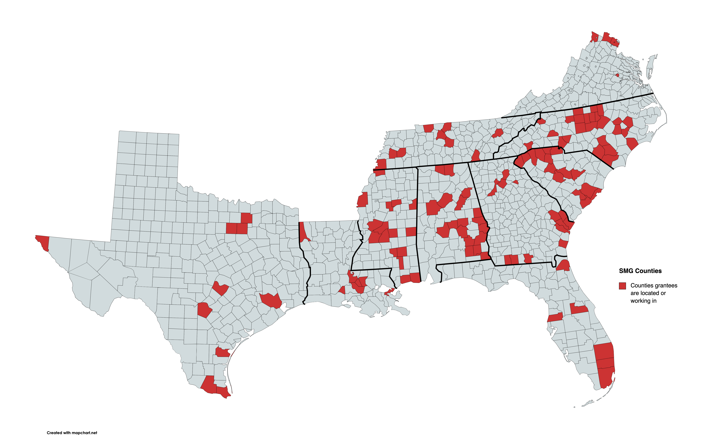

This graphic was created for the Southern Coalition for Social Justice. Their 86 Southern Movement Grant recipients were asked to submit two reports, an interim halfway through and a final report at the end of the grant period. In their reports, grantees summarized their work and where it was completed. To create this map, a CSV of all of the grantee report responses was generated, run through a script in Python using the Geonames Cache library to collect the names of the counties and cities in which work was completed by state. Quality control and spot checking was completed to ensure accuracy.
Those lists were then added to mapchart.net to create a visualization of where in each of the 10 states work was completed. By using Geonames Cache and Python, the tediousness of reviewing 170+ reports was cut down significantly, enabling a quick turn around. This map graphic has been included in additional funding requests for the organization, strengthening their ability to secure future funding.
Due to the nature of these reports, it was decided to create a static, inactive map as opposed to a more dynamic version. Plans for future versions include additional interactivity such as clicking on each county to see which grantees completed work there and what sort of work was completed.